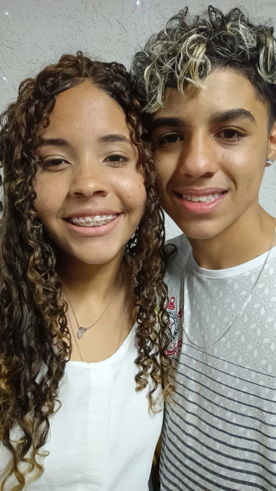

Nossa Linha do Tempo
üóìÔ∏è Onde tudo come√ßou
Onde tudo começou, e não dá pra negar que eu já estava me apaixonando por ti. Desde esse dia, meu coração já acelerava só de estar perto de ti!
30 de novembro de 2024üôè Juntos no caminho de Deus
Juntos até no caminho de Deus, onde nossa história com Deus começa!
8 de dezembro de 2024✨ Primeiro Ano Novo Juntos
Aqui já estava completamente apaixonado por ti, primeiro final de ano juntos, 00h, e eu estava ao seu lado!
1 de janeiro de 2025✈️ Nossa Primeira Viagem
A primeira viagem a gente nunca esquece, e essa nunca vou esquecer. Momentos incríveis tive com você nesses dias!
4 de janeiro de 2025üéÇ Seu Aniversário, Meu Amor!

Seu aniversário, dia em que Deus e a minha sogra me deram o amor da minha vida, e eu estou ao seu lado, como sempre prometido!
10 de maio de 2025üé§ Nosso Primeiro Show
5 meses juntos já, e nosso primeiro show! Uma das melhores experiências que já tive, e você esteve lá!
30 de maio de 2025üöó Depois da Longa Viagem
Juntos, depois de uma longa viagem, algumas brigas ksks, mas você sendo quem está ao meu lado!
22 de julho de 2025üíñ Hoje, Juntos e Felizes!
Hoje estamos aqui, juntos, felizes, num passeio que será lembrado para sempre, e você ainda sim, é o grande amor da minha vida!!
26 de julho de 2025Nossas Músicas do Cora√ß√£o üé∂
A trilha sonora do nosso amor. Aperta o play e sente a vibe!